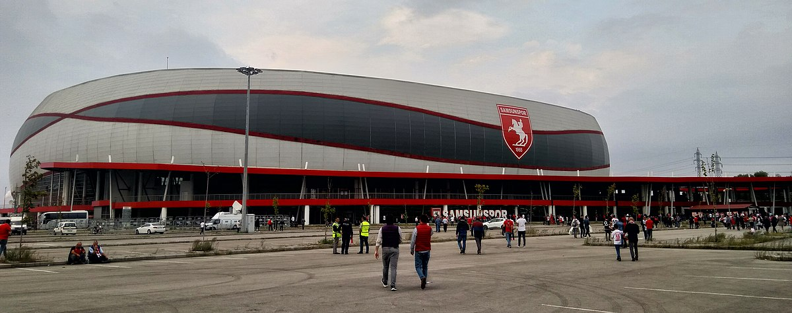
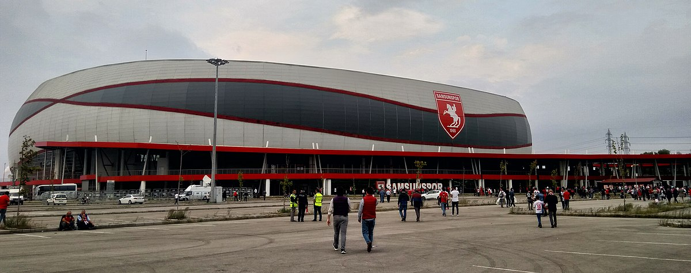

1965 yılında Samsun'da bulunan beş amatör mahalli lig takımı olan 19 Mayıs, Fener Gençlik, Akınspor ve Samsun Galatasaray Gençlik kulüpleri Samsunspor'a katılarak dönemin Ticaret Bankası vekili Kadri Ersan'ın kulüp başkanlığında kırmızı-beyaz renkleri benimseyen Samsunspor vücut bulmuş ve resmen Türkiye 2. Futbol Ligi'nde boy göstermeye başlamıştır. Böylece Samsunspor, profesyonel futbol faaliyetlerine başlamıştır. Samsunspor'u oluşturan kulüplerin birleştiği tarih olan 1927 kulübün esas kuruluş yılı olmasına rağmen resmî kuruluş tarihi, profesyonelliğe başvurduğu tarih olan 30 Haziran 1965 olarak kabul edilmektedir. Kulübün başvurusu ise Beden Terbiyesi Umum Müdürlüğü'nce 19 Temmuz 1965 tarihinde onaylanmıştır. Kulübün tescil fişinde yer alan bilgilere göre kulübün bu dönemde futbol, basketbol, voleybol, atletizm, güreş, masa tenisi ve boks şubesi bulunmaktaydı.
Samsunspor
Stadyumları
Erken dönemde Samsun'daki futbol maçları Dârülmuallimîn Mektebinin bahçesinde ve koşu alanında (günümüzde Gülsan Sanayi Sitesi) oynanmaktaydı. 1930'ların başında Fener adı verilen sazlık bölgede Fener Stadı adı verilen bir saha yapılmışsa da oldukça elverişsiz olması nedeniyle 1932 yılında tekrar elden geçirilmiştir. 1951 yılında tel örgülerin ve açık tribünün eklendiği statta duş ve tedavi olanakları gibi temel gereksinimler bulunmamaktaydı. Bu stat Samsun'daki tek stadyum olmakla birlikte amatör dönemde Samsunspor da bu stadyumu kullanmıştır. 1958 yılında inşa edilen Şehir Stadı ile birlikte Samsunspor maçlarını çağa uygun koşulları karşılayan bu stadyumda oynamaya başlamış, profesyonel liglere katılımıyla birlikte Şehir Stadı takıma ev sahipliği yapmaya başlamıştır. Takım ilk şampiyonluğunu ise 1968-69 sezonunda yine bu stadyumda yaşamıştır. Takım, profesyonel dönemde dokuz yıl kullanılan Şehir Stadı'nın ardından 19 Mayıs Stadyumu'na taşınmıştır. 23 Şubat 1975 tarihindeki Trabzonspor maçıyla beraber ilk defa 19 Mayıs Stadyumu'nda maça çıkan Samsunspor buradaki son maçına 20 Mayıs 2017 tarihinde Bandırmaspor'a karşı 1. Lig karşılaşmasında çıkmıştır. Samsunspor'un maçlarını oynadığı dördüncü stadyum ise 29 Temmuz 2017 tarihinde Ankaragücüne karşı oynanan dostluk maçıyla açılan 33.919 kişi kapasiteli yeni 19 Mayıs Stadyumu'dur. Günümüzde takımın iç saha maçlarını oynadığı 19 Mayıs Stadyumu, UEFA standartlarını karşılamakla birlikte uluslararası organizasyonlara ev sahipliği yapabilecek düzeydedir.
 

Siyah Rengin Eklenişi: 20 Ocak 1989
1988-1989 sezonunun takıma iyi gelmeyeceği ligin ilk yarısında alınan sonuçlardan da belliydi. Ligin ikinci yarısında kötü sonuçlara son vermek yeni bir başlangıç yapmak niyetindeydi Samsunsporlu futbolcular… İlk durak Malatya’ydı… Maç için karlı bir günde sabah saatlerinde yola çıkan o otobüsteki kimse, bu yolculuğun maalesef Teknik Direktör Nuri Asan, futbolcular Muzaffer Badalıoğlu,Zoran Tomić ve Mete Adanır ile otobüs şoförü Asım Özkan için "son deplasman" olduğunu bilmiyordu. Hava hayli soğuk yollar da epey karlıydı. Bu nedenle otobüsün şoförü Asım Özkan yolda durup herhangi bir kaza olmaması için tekerlere zincir taktı. Futbolcular da bu molayı fırsat bilip belki bu denli son kez eğlenerek kartopu oynadı, yolun kenarında kaydı ve ardından yola devam ettiler. Karlı hava nedeniyle buzlanan yollar tuzlanıyordu olası kaza riskini sıfıra indirebilmek için… Yolda kendi şeridinde, önünde "tuz" aracını gören kamyon şoförü karşı şeride geçerek yoluna devam etti, karşı şeritteyse futbol, 3 puan, taraftarını sevindirmek adına yeniden çıkışa geçmek için çare arayan Samsunspor kafilesi bulunuyordu. Tuz kamyonunu geçmek isteyen kamyon şoförü, ters şeride girdi. Ağır yük taşıyan şoförün fren yapıp o ağırlıktaki aracı hem de o karlı kaygan yolda durdurması imkansızdı. Nitekim acı son gerçekleşti. Son bir ses duyuldu arabanın ön tarafında oturan Mete’den “Eyvah gittik”… Saatler 9.30'u gösterdiğinde Türk futbol tarihine kara gün olarak geçecek, tüm Türkiye'yi yasa boğacak, Samsunspor'un renklerini kırmızı beyazdan, "kırmızı-beyaz-siyah"a çevirecek o an, o kaza yaşandı.